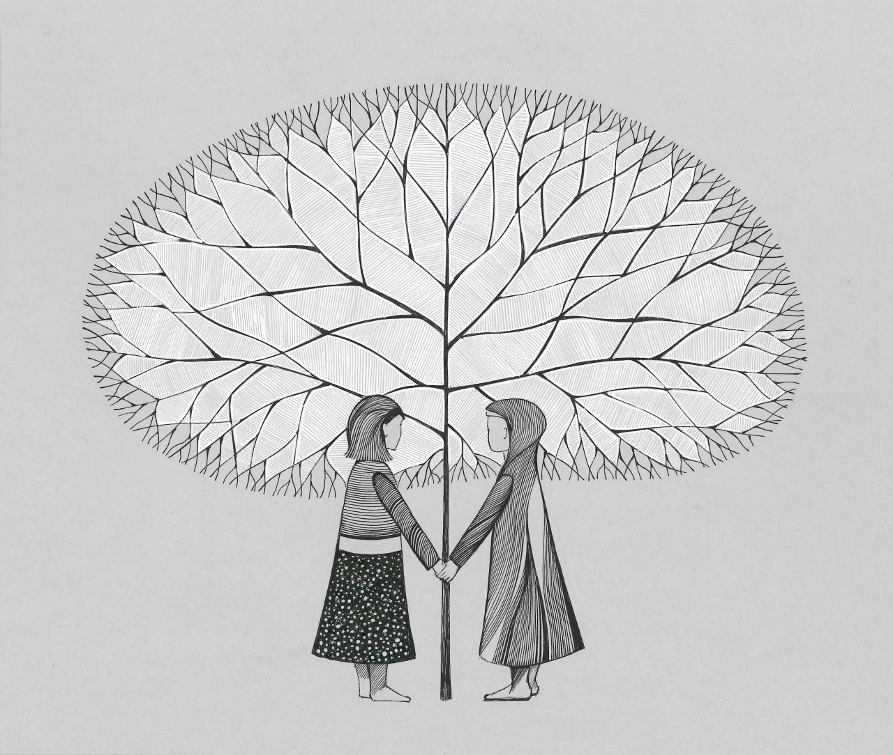

medis
Medienos pramonės įmonių portalas | Medis.lt

SKELBIMAI
ĮMONĖS
I-V 9:00-17:00+370 693 03603
1008 skelbimai
+ NAUJAS SKELBIMASPrisijungti
Registruotis
+ NAUJAS SKELBIMASSkelbimų kategorijos
Žaliavinė mediena
(210)Apvali mediena (rąstai)
(136)Mediena skirta kurui
(65)Medienos atliekos
(26)Medienos masė, popiermedžiai
(28)Kita žaliavinė mediena
(9)Pjautinė mediena
(380)Statybinė mediena
(89)Pabėgiai
(3)Stulpai
(2)Taros ruošiniai
(78)Ruošiniai baldams
(74)Ruošiniai parketui
(17)Lentos
(207)Kita pjautinė mediena
(45)Medienos gaminiai
(227)Tekintos apvalios detalės
(4)Klijuota tiesi, lenkta mediena
(20)Medžio drožlių plokštės
(4)Medžio plaušo plokštės
(3)Klijuotos medienos plokštės, tašai
(27)Fanera, faneruotė, lukštas
(8)Langai, durys
(4)Stogo konstrukcijos
(11)Laiptai, turėklai
(6)Grindinės lentos, parketas
(31)Padėklai, tara, dėžės
(22)Pirtys ir pirčių reikmenys
(14)Statinės, kubilai
(2)Dovanos, meno dirbiniai ir suvenyrai
(1)Kiti mediniai gaminiai
(46)Tvoros, vartai, grotos
(9)Tiesmetriniai apdailos gaminiai
(44)Lauko mediniai gaminiai
(46)Pjuvenų briketai, granulės, medžio anglis
(30)Baldų elementai, detalės
(43)Interjero detalės
(17)Surenkami mediniai namai
(11)Baldai
(8)Sodo (lauko) baldai
(5)Gyvenamųjų patalpų baldai
(3)Virtuvės baldai
(2)Miegamojo baldai
(2)Svetainės baldai
(2)Vaikų kambario baldai
(2)Įrenginiai, įrankiai, mašinos
(186)Džiovinimo įrengimai
(22)Medienos apdirbimo įrengimai
(70)Kėlimo, transportavimo įrengimai ir mašinos
(20)Pjūklai, peiliai
(19)Medienos apdirbimo įrankiai
(23)Matavimo įrankiai ir prietaisai
(4)Miško ruošos mašinos, įrengimai
(14)Naudoti įrengimai
(100)Drožlių ir dulkių ištraukimo sistemos
(2)Įrankių ir įrengimų remontas, nuoma
(16)Įrankių galandimas
(9)Medienos atliekų perdirbimo įrengimai
(19)Paslaugos
(81)Medienos impregnavimas ir dažymas
(5)Medienos džiovinimas
(18)Medinių namų statyba ir projektavimas
(3)Transporto paslaugos
(17)Remontas, restauracija
(1)Stalių gaminiai, paslaugos
(15)Projektavimas, dizainas
(1)Mokymas, švietimas, literatūra
(2)Konsultacijos, technologijos
(8)Medienos pjovimas
(13)Medienos obliavimas
(12)Medienos sandėliavimas
(1)Medienos atliekų smulkinimas
(5)Miškininkystė
(36)Sodinukų auginimas
(2)Miškotvarkos projektų rengimas
(3)Miško ruoša, kirtimas, išvežimas
(34)Medžiagos ir furnitūra
(16)Apdailos medžiagos
(15)Klijavimo medžiagos
(1)Nekilnojamasis turtas
(27)Sandėliavimo ir gamybinės patalpos
(3)Kitas nekilnojamasis turtas
(2)Status miškas, miškas su žeme
(23)Verslas
(3)Verslo, investavimo pasiūlymai
(3)Darbo pasiūlymai
(5)Darbo pasiūlymai
(5) Prenumeruoti skelbimusMedis.lt rekomenduoja
Ieško 3 Vakar Panevėžio m. sav. 3perkame ąžuolinius rąstus
ELITĖJA, UAB Sutartinė
Sutartinė Ieško 3 09.21 Elektrėnų sav. 3
nuolat brangiai perkame visų rūšių ąžuolo rąstus
Bauwerk Boen, UAB Sutartinė
Sutartinė Ieško 3 10.15 Alytaus r. sav. 3
nuolat brangiai perkame ąžuolo rąstus
MEDINUKAI, UAB Sutartinė
Sutartinė Ieško Šiandien Plungės r. sav.
3,0 m plonrąsčiai (tariniai)
GILINIS, UAB Sutartinė
Sutartinė Siūlo Vakar Visa Lietuva
apvali mediena visoje lietuvoje
UPPS.LT, UAB Sutartinė
Sutartinė
VIP partneriai
VIZON, UAB MEDINUKAI, UAB Lygnum, UAB Karaliaučius, MBNaujausi skelbimai
Ieško Šiandien Šilutės r. sav.Perku beržo rąstus. Atsikaitau iš karto
Č. Ramanausko IĮ Sutartinė
Sutartinė Siūlo Šiandien Šilutės r. sav.
Brangiai perku beržo rąstus, beržo tarą be branduolio. Atsikaitau iš karto
Č. Ramanausko IĮ Sutartinė
Sutartinė Siūlo Šiandien Šiaulių m. sav.
ąžuolo rąstai šiauliuose
PETRO MEDIS, UAB 200,00 EUR / 690,56 Lt
242,00 EUR / 835,58 Lt
(200,00 EUR / 690,56 Lt be PVM)
Siūlo Šiandien Šiaulių m. sav.miškovežio paslauga su manipuliatoriumi
PETRO MEDIS, UAB Sutartinė
Sutartinė Ieško Šiandien Šiaulių m. sav.
perkame mišką su žeme ar išsikirtimui
PETRO MEDIS, UAB Sutartinė
Sutartinė Siūlo Šiandien Šiaulių r. sav.
įvairios malkos
PETRO MEDIS, UAB Sutartinė
Sutartinė Ieško Šiandien Šiaulių m. sav.
perkame eglės rąstus
PETRO MEDIS, UAB Sutartinė
Sutartinė Siūlo Šiandien Šiaulių m. sav.
miškovežis volvo
PETRO MEDIS, UAB 18.500,00 EUR / 63.876,80 Lt
22.385,00 EUR / 77.290,93 Lt
(18.500,00 EUR / 63.876,80 Lt be PVM)
Ieško Šiandien Šiaulių m. sav.perkame eglės popiermedį, bei eglės tarą
PETRO MEDIS, UAB Sutartinė
Sutartinė Siūlo Šiandien Jurbarko r. sav.
juodalksnio ruošiniai 12/15 x 50/71/93mm
ELODENA, UAB Sutartinė
Sutartinė Siūlo Šiandien Jurbarko r. sav.
brusas 35x95x1200
ELODENA, UAB 100,00 EUR / 345,28 Lt
121,00 EUR / 417,79 Lt
(100,00 EUR / 345,28 Lt be PVM)
Siūlo Šiandien Jurbarko r. sav.pirties/vidaus drebulės dailylentės
ELODENA, UAB Sutartinė
Sutartinė Ieško Šiandien Raseinių r. sav.
Perkame viengubo pjovimo beržo lentas, AB kokybės, nedžiovintas
Murameda, UAB Sutartinė
Sutartinė Siūlo Šiandien Raseinių r. sav.
medienos džiovinimas
Murameda, UAB Sutartinė
Sutartinė Siūlo Šiandien Raseinių r. sav.
galandinimo staklės rondamat 950
Murameda, UAB Sutartinė
Sutartinė Siūlo Šiandien Raseinių r. sav.
džiovinti beržo dvigubo pjovimo ruošiniai 32mm
Murameda, UAB Sutartinė
Sutartinė Siūlo Šiandien Raseinių r. sav.
viengubo pjovimo beržas bc kd
Murameda, UAB Sutartinė
Sutartinė Siūlo Šiandien Raseinių r. sav.
keturpusės obliavimo staklės weinig pfa 16k7
Murameda, UAB Sutartinė
Sutartinė Siūlo Šiandien Raseinių r. sav.
800 kw katilas pilnos komplektacijos
Murameda, UAB Sutartinė
Sutartinė Siūlo Šiandien Raseinių r. sav.
hidromanipuliatoriaus jonsered 890 dalys
Murameda, UAB Sutartinė
Sutartinė Daugiau skelbimų » Įdėti skelbimą » Paskutinės paieškos frazės » Prenumeruoti skelbimus Kontaktai Mūsų paslaugos Reklama
Posted by Jack  Read more
Read more  Comments (15)
Comments (15)  2020.10.29 11:16
2020.10.29 11:16